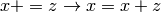

<NineML>
This is the root namespace tag for a NineML file. It can contain <ComponentClass> elements.
Todo
XML namespaces.
<ComponentClass name="">
This tag starts an abstraction layer component definition.
Attributes:
Child Elements:
<Parameter name="" dimension="">
This tag specifies a parameter in the interface of the component
Attributes:
Child Elements: None
<AnalogPort name="" mode="" reduce_op="" dimension="" >
This tag specifies an AnalogPort in the interface of the component
Attributes:
Child Elements: None
<EventPort name="" mode="">
This tag specifies an EventPort in the interface of the component
Attributes:
Child Elements: None
<Dynamics>
This tag specifies the dynamics of the component
Attributes: None
Child Elements:
<StateVariable name='' dimension=''>
This tag declares a state-variable in the component
Attributes:
Child Elements: None
<Alias name=''>
This tag declares an alias in the component
Attributes:
Child Elements:
<Regime>
This tag declares an regime in the component. There must be exactly on TimeDerivative block for each StateVariable block declared in the enclosing <Dynamics> block, even if it has a RHS of zero.
Attributes:
Child Elements:
<TimeDerivative>
This tag defines the differential equation controlling the evolution of a StateVariable while in this regime.
Attributes:
Child Elements:
<OnCondition>
This block specifies a transition from the enclosing Regime, which is triggered by a mathematical function of the Component’s Aliases, StateVariables, Ports and Parameters.
Attributes: None
Child Elements:
transition to occur)
<StateAssignment> [0+] (The state assignments that should occur when this transition is triggered)
<EventOut> [0+] (The events that should be sent when this transition is triggered)
<OnEvent>
This block specifies a transition from the enclosing Regime, which is triggered by an input event.
Attributes:
Child Elements:
<Trigger>
This block is used by <OnCondition> blocks to define the condition needed for them to be triggered.
Attributes: None
Child Elements:
<StateAssignment>
Used in transitions to assign a value to a state-variable during a transition.
Note
‘In-place’ operations are not supported and should be written out as in full: 
Attributes:
Child Elements:
<EventOut>
Used in transitions to emit an event.
Attributes:
Child Elements: None
<MathInline>
A block used to specify mathematical expressions. The expression is expected to be in C style and given as text. In future versions of NineML, we will support <MathML> blocks too.
Attributes: None
Child Elements: None
An example model of an Izhikevich model is given:
<?xml version='1.0' encoding='UTF-8'?>
<NineML xmlns="http://nineml.org/9ML/0.1"
xmlns:xsi="http://www.w3.org/2001/XMLSchema-instance"
xsi:schemaLocation="http://nineml.org/9ML/0.1 NineML_v0.2.xsd">
<ComponentClass name="izhikevichCellNew">
<Parameter name="a" dimension='none'/>
<Parameter name="c" dimension='none'/>
<Parameter name="b" dimension='none'/>
<Parameter name="d" dimension='none'/>
<Parameter name="theta" dimension='voltage'/>
<AnalogPort name="iSyn" mode='reduce' reduce_op='+' dimension='current'/>
<AnalogPort name="U" mode="send" dimension='none'/>
<AnalogPort name="V" mode="send" dimension='voltage'/>
<EventPort name="spikeOutput" mode="send"/>
<Dynamics>
<StateVariable name="V" dimension="voltage"/>
<StateVariable name="U" dimension="none"/>
<Alias name='rv' dimension='none'>
<MathInline>V*U</MathInline>
</Alias>
<Regime name="subthresholdRegime">
<TimeDerivative variable="U">
<MathInline>a*(b*V - U)</MathInline>
</TimeDerivative>
<TimeDerivative variable="V">
<MathInline>0.04*V*V + 5*V + 140.0 - U + iSyn</MathInline>
</TimeDerivative>
<OnCondition>
<Trigger>
<MathInline>V > theta </MathInline>
</Trigger>
<StateAssignment variable="V" >
<MathInline>c</MathInline>
</StateAssignment>
<StateAssignment variable="U" >
<MathInline>U+d</MathInline>
</StateAssignment>
<EventOut port="spikeOutput" />
</OnCondition>
</Regime>
</Dynamics>
</ComponentClass>
</NineML>